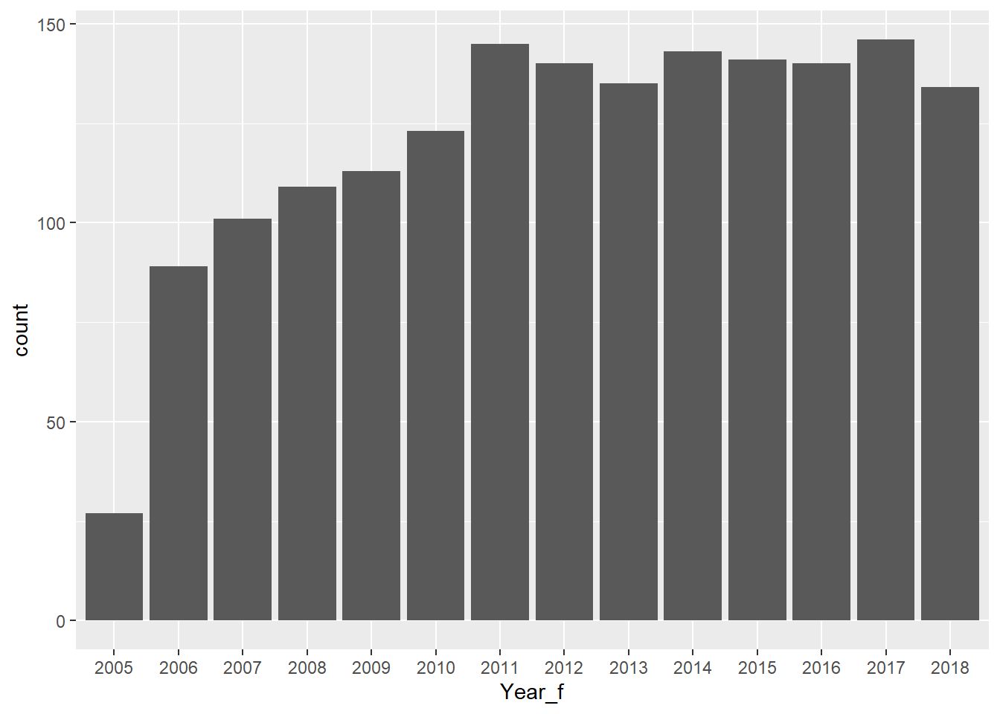
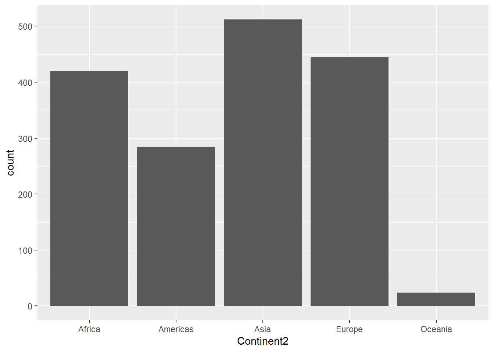

Code
library(tidyverse)
library(scidesignR)
library(knitr)
library(kableExtra)
library(countrycode)
library(skimr)
set.seed(4240)Let’s get started!
library(tidyverse)
library(scidesignR)
library(knitr)
library(kableExtra)
library(countrycode)
library(skimr)
set.seed(4240)In Section 2.3, 20 patients for Example 2.5 were randomly selected from a population of 25,000.
Explain why the probability of choosing a random sample of 20 from 25,000 is \[ \frac{1} {25000 \choose 20} \]
Let’s start with smaller population size, 6, {A, B, C, D, E, F}. And, let’s start with a smaller sample size, 1. We can pick one of {A}, {B}, {C}, {D}, {E}, or {F}. That is, there are 6 ways to have a sample of size 1. The probability of choosing a random sample of size 1 from a population of size 6 is 1/6.
Let’s expand to a sample size 2. We know that once an individual is added to our sample, they can’t be picked again, and it doesn’t matter what order the individuals are added to the sample. Then, these are all the possible ways that we could pick them: {A, B} {A, C} {A, D} {A, E} {A, F}
{B, C} {B, D} {B, E} {B, F}
{C, D} {C, E} {C, F}
{D, E} {D, F}
{E, F}
That is, there are 15 ways to pick a sample of size 2. The probability of choosing a random sample of size 2 from a population of size 6 is 1/15.
We can recognize that the number of ways to pick a sample of size r from a population of size n is the binomial coefficient \(\frac{n!}{(r!(n-r)!)}\) (i.e., “n choose r”).
□
Use R to randomly select 4 patients from a total of 8 patients, and calculate the probability of choosing this random sample.
Explored with R
# Input Parameters
populationSize <- 8
sampleSize <- 4
# Population Table
patients <- tibble(id = 1:populationSize)
# Pick a sample
chosenRandomSample <- patients |>
sample_n(sampleSize)
# How many random samples are possible?
numberOfRandomSamples <- choose(populationSize, sampleSize)
# Probability of choosing this particular random sample
probabilityOfChosenRandomSample <- (1 / numberOfRandomSamples)
# Results
probabilityOfChosenRandomSampleRounded <- round(probabilityOfChosenRandomSample, 3)
probabilityOfChosenRandomSampleRoundedVisualized with R
patients |>
mutate(
"Selected for Sample" = if_else(id %in% chosenRandomSample$id, "TRUE", "FALSE")
) |>
kbl() |>
kable_styling()| id | Selected for Sample |
|---|---|
| 1 | FALSE |
| 2 | FALSE |
| 3 | TRUE |
| 4 | FALSE |
| 5 | TRUE |
| 6 | TRUE |
| 7 | TRUE |
| 8 | FALSE |
Therefore, the probability of choosing this random sample is \(\frac{1}{70} \approx 0.014\).
■
The treatment assignment displayed in Table 2.5 is from one treatment assignment out of \({20 \choose 10}\) possible random treatment assignments.
R can be used to generate all possible combinations of 10 patients assigned to the treatment group using combn(covid_sample$id, 10). Use the command to generate the combinations and confirm that there are \({20 \choose 10}\) ways to generate the treatment assignments.
# Variables
covid_patientPopulationSize = 25000
covid_treatmentSampleSize <- 20
covid_activeTreatmentSampleSize <- 10 # the number of patients to be assigned to the active treatment (i.e., no placebo)
#################################
# The population of Covid Patients
covid_patientPopulation <- tibble(id = 1:covid_patientPopulationSize)
# The sample of covid patients that we will treat
covid_treatmentSamplePatients <- covid_patientPopulation |>
sample_n(covid_treatmentSampleSize)
# Of the sample of patients we will treat, every possible combination of those that will receive the active treatment
allPossibleActiveTreatmentSamplePatients <- covid_treatmentSamplePatients$id |>
combn(covid_activeTreatmentSampleSize) |>
as_tibble()Warning: The `x` argument of `as_tibble.matrix()` must have unique column names if
`.name_repair` is omitted as of tibble 2.0.0.
ℹ Using compatibility `.name_repair`.expectedActiveTreatmentSampleCombinationsSize <- choose(covid_treatmentSampleSize, covid_activeTreatmentSampleSize)
###########################
covid_treatmentSamplePatients |>
kbl(caption="COVID Patients to Receive Treatment Sample") |>
kable_styling()| id |
|---|
| 16715 |
| 17290 |
| 20264 |
| 14181 |
| 10921 |
| 4883 |
| 16803 |
| 19022 |
| 16250 |
| 18137 |
| 1475 |
| 9472 |
| 15340 |
| 8489 |
| 13396 |
| 20749 |
| 17983 |
| 14717 |
| 15458 |
| 18309 |
ncol(allPossibleActiveTreatmentSamplePatients)[1] 184756expectedActiveTreatmentSampleCombinationsSize[1] 184756□
To generate the random array of treatment assignments in Table 2.5, R was used to randomly select 10 patients for the active treatment first and then assigned the placebo to the remaining 10. We can also generate a random treatment assignment vector by randomly selecting a column from the matrix of all possible treatment assignments created in part a. In R, randomly select a column and assign the first 10 to the active treatment and the rest to the placebo. Repeat a few times and discuss whether the procedure results in random assignments as desired. (Hint: You can use if_else(condition, true, false) inside mutate to return true when condition is met and false otherwise.)
# Pick a random number between 1 and the total number of combinations to choose the patients that will get the active treatment
randomColumnNumberFrom_allPossibleActiveTreatmentSamplePatients <- sample(1:ncol(allPossibleActiveTreatmentSamplePatients),1)
# Get all the patient IDs that will get the active treatment
covid_activeTreatmentSamplePatients <- allPossibleActiveTreatmentSamplePatients |>
pull(randomColumnNumberFrom_allPossibleActiveTreatmentSamplePatients)
########################################
display <- covid_treatmentSamplePatients |>
mutate(
treatmentAssignment = if_else(id %in% covid_activeTreatmentSamplePatients, "Active", "Placebo")
) |>
arrange(treatmentAssignment, id)
index <- auto_index(display$treatmentAssignment)
display |>
kbl() |>
pack_rows(index = index) |>
kable_styling()| id | treatmentAssignment |
|---|---|
| Active | |
| 13396 | Active |
| 14181 | Active |
| 15340 | Active |
| 15458 | Active |
| 16250 | Active |
| 16803 | Active |
| 17983 | Active |
| 19022 | Active |
| 20264 | Active |
| 20749 | Active |
| Placebo | |
| 1475 | Placebo |
| 4883 | Placebo |
| 8489 | Placebo |
| 9472 | Placebo |
| 10921 | Placebo |
| 14717 | Placebo |
| 16715 | Placebo |
| 17290 | Placebo |
| 18137 | Placebo |
| 18309 | Placebo |
Our first step uses a simple random sample of 20 patients from our population to receive treatment. Using this sample, we generate all possible combinations of choosing 10 patients. (i.e., \({20 \choose 10} = 184,756\) possible combinations) Picking a random number from 1:184756 and giving those 10 patients the active treatment is still a simple random sample. We are always guaranteed to have exactly 20 randomly selected patients from the population, and exactly 10 of those will be randomly selected to receive the active treatment. This proceudre does result in random assignments as desired.
□
Another scheme we may consider is to assign TRT or PLA to each patient with equal probabilities independently. Implement the procedure in R. Repeat a few times and discuss whether the procedure results in random assignments as desired.
# "Equal Probability Assuming Independence"
equalProbabilty <- sample(c("TRT","PLA"), size = covid_treatmentSampleSize, replace = TRUE)
# Assign TRT or PLA to each patient independently
covid_treatmentSamplePatients |>
mutate(
treatmentAssignment = sample(c("TRT","PLA"), size = covid_treatmentSampleSize, replace = TRUE)
) |>
select(treatmentAssignment) |>
group_by(treatmentAssignment) |>
summarize(n = n()) |>
kbl() |>
kable_styling()| treatmentAssignment | n |
|---|---|
| PLA | 9 |
| TRT | 11 |
## TODO: run a loop and document the distribution ... good to plot it as well.
df <- data.frame(id = 1:100, trialTRT = NA)
for (trial in 1:100) {
currentTrial <- covid_treatmentSamplePatients |>
mutate(
treatmentAssignment = sample(c("TRT","PLA"), size = covid_treatmentSampleSize, replace = TRUE)
) |>
select(treatmentAssignment) |>
group_by(treatmentAssignment) |>
summarize(n = n())
df$trialTRT[trial] <- currentTrial$n[currentTrial$treatmentAssignment=="TRT"]
}
dict <- data.frame(
TRT = 0:20,
n = 0
)
for (i in 1:100) {
currentValue <- df[i,]$trialTRT
dict[dict$TRT==currentValue,]$n <- dict[dict$TRT==currentValue,]$n + 1
}
df |>
group_by(TRT = trialTRT) |>
select(TRT) |>
summarise(n = n())# A tibble: 13 × 2
TRT n
<int> <int>
1 4 1
2 5 1
3 6 3
4 7 8
5 8 11
6 9 20
7 10 13
8 11 16
9 12 11
10 13 7
11 14 7
12 15 1
13 16 1dict |>
ggplot(aes(
x = factor(TRT),
y = n
)) +
geom_col() +
geom_vline(xintercept = 11)
□
Can you think of another procedure in R for randomly assigning 10 patients to active treatment? Implement your own procedure in R to verify the procedure results in random assignments.
covid_treatmentSamplePatients |>
arrange(id) |> ### Obviously when this step is added, it won't be random.
mutate(treatmentAssignment = if_else(row_number(id) <= covid_activeTreatmentSampleSize, "TRT", "PLA"))# A tibble: 20 × 2
id treatmentAssignment
<int> <chr>
1 1475 TRT
2 4883 TRT
3 8489 TRT
4 9472 TRT
5 10921 TRT
6 13396 TRT
7 14181 TRT
8 14717 TRT
9 15340 TRT
10 15458 TRT
11 16250 PLA
12 16715 PLA
13 16803 PLA
14 17290 PLA
15 17983 PLA
16 18137 PLA
17 18309 PLA
18 19022 PLA
19 20264 PLA
20 20749 PLA newDict <- data.frame(
id = 0,
n = 0
)
for(i in 1:1000) {
this_covid_treatmentSamplePatients <- covid_patientPopulation |>
sample_n(covid_treatmentSampleSize) |>
arrange(id) |>
mutate(treatmentAssignment = if_else(row_number(id) <= covid_activeTreatmentSampleSize, "TRT", "PLA"))
}■
A chemist has seven light objects to weigh on a balance pan scale. The standard deviation of each weighing is denoted by \(\sigma\). In a 1935 paper, Frank Yates suggested an improved technique by weighing all seven objects together, and also weighing them in groups of three. The groups are chosen so that each object is weighed four times altogether, twice with any other object and twice without it.
Let \(y_1,...,y_8\) be the readings from the scale so that the equations for determining the unknown weights, \(\beta_1,...,\beta_7\), are
\[ \begin{align*} y_1 &= \beta_1 + \beta_2 + \beta_3 + \beta_4 + \beta_5 + \beta_6 + \beta_7 + \epsilon_1 \\ y_2 &= \beta_1 + \beta_2 + \beta_3 + \epsilon_2 \\ y_3 &= \beta_1 + \beta_4 + \beta_5 + \epsilon_3 \\ y_4 &= \beta_1 + \beta_6 + \beta_7 + \epsilon_4 \\ y_5 &= \beta_2 + \beta_4 + \beta_6 + \epsilon_5 \\ y_6 &= \beta_2 + \beta_5 + \beta_7 + \epsilon_6 \\ y_7 &= \beta_3 + \beta_4 + \beta_7 + \epsilon_7 \\ y_8 &= \beta_3 + \beta_5 + \beta_6 + \epsilon_8 \end{align*} \]
where the \(\epsilon_i,i=1,...,8\) are independent errors.
Hotelling suggested modifying Yates’ procedure by placing in the other pan of the scale those of the objects not included in one of his weighings. In other words if the first three objects are to be weighed, then the remaining four objects would be placed in the opposite pan.
Write Yates’ procedure in matrix form and find the least squares estimates of β.
Yates’ procedure can be written using the matrix form:
\[ y = X\beta + \epsilon \] \[ \begin{pmatrix} y_1 \\ y_2 \\ y_3 \\ y_4 \\ y_5 \\ y_6 \\ y_7 \\ y_8 \end{pmatrix} = \begin{pmatrix} 1 & 1 & 1 & 1 & 1 & 1 & 1 \\ 1 & 1 & 1 & 0 & 0 & 0 & 0 \\ 1 & 0 & 0 & 1 & 1 & 0 & 0 \\ 1 & 0 & 0 & 0 & 0 & 1 & 1 \\ 0 & 1 & 0 & 1 & 0 & 1 & 0 \\ 0 & 1 & 0 & 0 & 1 & 0 & 1 \\ 0 & 0 & 1 & 1 & 0 & 0 & 1 \\ 0 & 0 & 1 & 0 & 1 & 1 & 0 \end{pmatrix} \begin{pmatrix} \beta_1 \\ \beta_2 \\ \beta_3 \\ \beta_4 \\ \beta_5 \\ \beta_6 \\ \beta_7 \end{pmatrix} + \begin{pmatrix} \epsilon_1 \\ \epsilon_2 \\ \epsilon_3 \\ \epsilon_4 \\ \epsilon_5 \\ \epsilon_6 \\ \epsilon_7 \\ \epsilon_8 \end{pmatrix} \]
Yates <- matrix(
c(
1, 1, 1, 1, 1, 1, 1,
1, 1, 1, 0, 0, 0, 0,
1, 0, 0, 1, 1, 0, 0,
1, 0, 0, 0, 0, 1, 1,
0, 1, 0, 1, 0, 1, 0,
0, 1, 0, 0, 1, 0, 1,
0, 0, 1, 1, 0, 0, 1,
0, 0, 1, 0, 1, 1, 0
),
nrow = 8,
ncol = 7,
byrow = TRUE
)
# X
X <- Yates
X [,1] [,2] [,3] [,4] [,5] [,6] [,7]
[1,] 1 1 1 1 1 1 1
[2,] 1 1 1 0 0 0 0
[3,] 1 0 0 1 1 0 0
[4,] 1 0 0 0 0 1 1
[5,] 0 1 0 1 0 1 0
[6,] 0 1 0 0 1 0 1
[7,] 0 0 1 1 0 0 1
[8,] 0 0 1 0 1 1 0# X'X
Y <- t(X) %*% X
Y [,1] [,2] [,3] [,4] [,5] [,6] [,7]
[1,] 4 2 2 2 2 2 2
[2,] 2 4 2 2 2 2 2
[3,] 2 2 4 2 2 2 2
[4,] 2 2 2 4 2 2 2
[5,] 2 2 2 2 4 2 2
[6,] 2 2 2 2 2 4 2
[7,] 2 2 2 2 2 2 4# (X'X)^-1
W <- solve(Y)
W [,1] [,2] [,3] [,4] [,5] [,6] [,7]
[1,] 0.4375 -0.0625 -0.0625 -0.0625 -0.0625 -0.0625 -0.0625
[2,] -0.0625 0.4375 -0.0625 -0.0625 -0.0625 -0.0625 -0.0625
[3,] -0.0625 -0.0625 0.4375 -0.0625 -0.0625 -0.0625 -0.0625
[4,] -0.0625 -0.0625 -0.0625 0.4375 -0.0625 -0.0625 -0.0625
[5,] -0.0625 -0.0625 -0.0625 -0.0625 0.4375 -0.0625 -0.0625
[6,] -0.0625 -0.0625 -0.0625 -0.0625 -0.0625 0.4375 -0.0625
[7,] -0.0625 -0.0625 -0.0625 -0.0625 -0.0625 -0.0625 0.4375# (X'X)^-1 * X'
A <- W %*% t(X)
A [,1] [,2] [,3] [,4] [,5] [,6] [,7] [,8]
[1,] 0.0625 0.3125 0.3125 0.3125 -0.1875 -0.1875 -0.1875 -0.1875
[2,] 0.0625 0.3125 -0.1875 -0.1875 0.3125 0.3125 -0.1875 -0.1875
[3,] 0.0625 0.3125 -0.1875 -0.1875 -0.1875 -0.1875 0.3125 0.3125
[4,] 0.0625 -0.1875 0.3125 -0.1875 0.3125 -0.1875 0.3125 -0.1875
[5,] 0.0625 -0.1875 0.3125 -0.1875 -0.1875 0.3125 -0.1875 0.3125
[6,] 0.0625 -0.1875 -0.1875 0.3125 0.3125 -0.1875 -0.1875 0.3125
[7,] 0.0625 -0.1875 -0.1875 0.3125 -0.1875 0.3125 0.3125 -0.1875Let \(X\) be the design matrix, where each row \(i\) corresponds to an individual instance of weighing, and where each column \(j\) represents a “light object”.
\[ X = \begin{pmatrix} 1 & 1 & 1 & 1 & 1 & 1 & 1 \\ 1 & 1 & 1 & 0 & 0 & 0 & 0 \\ 1 & 0 & 0 & 1 & 1 & 0 & 0 \\ 1 & 0 & 0 & 0 & 0 & 1 & 1 \\ 0 & 1 & 0 & 1 & 0 & 1 & 0 \\ 0 & 1 & 0 & 0 & 1 & 0 & 1 \\ 0 & 0 & 1 & 1 & 0 & 0 & 1 \\ 0 & 0 & 1 & 0 & 1 & 1 & 0 \end{pmatrix} \]
Then each entry in the design matrix is defined as
\[ x_{ij} = \begin{cases} 1 &\text{object } j \text{ is on the scale in weighing } i \\ 0 &\text{object } j \text{ is not included in weighing } i \end{cases} \]
Then, it follows that a column of \(X\) is the participation pattern of one object across all weighings. For example Object 1 is in Weighing 1, 2, 3, and 4.
And so the normal matrix is:
\[ X^{T}X = \begin{pmatrix} 4 & 2 & 2 & 2 & 2 & 2 & 2 \\ 2 & 4 & 2 & 2 & 2 & 2 & 2 \\ 2 & 2 & 4 & 2 & 2 & 2 & 2 \\ 2 & 2 & 2 & 4 & 2 & 2 & 2 \\ 2 & 2 & 2 & 2 & 4 & 2 & 2 \\ 2 & 2 & 2 & 2 & 2 & 4 & 2 \\ 2 & 2 & 2 & 2 & 2 & 2 & 4 \end{pmatrix} \]
Which clearly results in each row \(j\) and each column \(k\) both representing an object, and the \((j,k)\) entry is the number of weighings that include both objects as defined by:
\[ (X^{T}X)_{jk} = \sum_{i=1}^{8}x_{ij}x_{ik} \]
It is clear to see that when \(j = k\) the object has been in 4 weighings - this is true for every object. It is also clear to see that when \(j \not = k\) that the objects are in exactly 2 weighings with each other - this is also true for every pair of objects.
Therefore, our interpretations are that:
We continue with the inverse normal matrix, which helps us better understand the unvertainty of the design.
\[ (X^\top X)^{-1} = \frac{1}{16} \begin{pmatrix} 7 & -1 & -1 & -1 & -1 & -1 & -1 \\ -1 & 7 & -1 & -1 & -1 & -1 & -1 \\ -1 & -1 & 7 & -1 & -1 & -1 & -1 \\ -1 & -1 & -1 & 7 & -1 & -1 & -1 \\ -1 & -1 & -1 & -1 & 7 & -1 & -1 \\ -1 & -1 & -1 & -1 & -1 & 7 & -1 \\ -1 & -1 & -1 & -1 & -1 & -1 & 7 \end{pmatrix} \]
As expected, we see symmetry and our interpretations are:
\[ \text{Cov}(\hat{\beta}_j,\hat{\beta}_k) = -\frac{\sigma^2}{16} \]
We then proceed to the least-squares operator
\[ (X^\top X)^{-1}X^\top = \frac{1}{16} \begin{pmatrix} 1 & 5 & 5 & 5 & -3 & -3 & -3 & -3 \\ 1 & 5 & -3 & -3 & 5 & 5 & -3 & -3 \\ 1 & 5 & -3 & -3 & -3 & -3 & 5 & 5 \\ 1 & -3 & 5 & -3 & 5 & -3 & 5 & -3 \\ 1 & -3 & 5 & -3 & -3 & 5 & -3 & 5 \\ 1 & -3 & -3 & 5 & 5 & -3 & -3 & 5 \\ 1 & -3 & -3 & 5 & -3 & 5 & 5 & -3 \end{pmatrix} \]
Which, when multiplied by \(\underset{n \times 1}{y}\) gives us our least squares estimators:
\[ \hat{\beta}_1 = \frac{1}{16} \bigl( y_1 + 5y_2 + 5y_3 + 5y_4 - 3y_5 - 3y_6 - 3y_7 - 3y_8 \bigr) \] \[ \hat{\beta}_2 = \frac{1}{16} \bigl( y_1 + 5y_2 - 3y_3 - 3y_4 + 5y_5 + 5y_6 - 3y_7 - 3y_8 \bigr) \]
\[ \hat{\beta}_3 = \frac{1}{16} \bigl( y_1 + 5y_2 - 3y_3 - 3y_4 - 3y_5 - 3y_6 + 5y_7 + 5y_8 \bigr) \]
\[ \hat{\beta}_4 = \frac{1}{16} \bigl( y_1 - 3y_2 + 5y_3 - 3y_4 + 5y_5 - 3y_6 + 5y_7 - 3y_8 \bigr) \]
\[ \hat{\beta}_5 = \frac{1}{16} \bigl( y_1 - 3y_2 + 5y_3 - 3y_4 - 3y_5 + 5y_6 - 3y_7 + 5y_8 \bigr) \]
\[ \hat{\beta}_6 = \frac{1}{16} \bigl( y_1 - 3y_2 - 3y_3 + 5y_4 + 5y_5 - 3y_6 - 3y_7 + 5y_8 \bigr) \]
\[ \hat{\beta}_7 = \frac{1}{16} \bigl( y_1 - 3y_2 - 3y_3 + 5y_4 - 3y_5 + 5y_6 + 5y_7 - 3y_8 \bigr) \]
□
Write Hotelling’s procedure in matrix form
Hotelling’s procedure can be written using the matrix form:
\[ y = X\beta + \epsilon \] \[ \begin{pmatrix} y_1 \\ y_2 \\ y_3 \\ y_4 \\ y_5 \\ y_6 \\ y_7 \\ y_8 \end{pmatrix} = \begin{pmatrix} 1 & 1 & 1 & 1 & 1 & 1 & 1 \\ 1 & 1 & 1 & -1 & -1 & -1 & -1 \\ 1 & -1 & -1 & 1 & 1 & -1 & -1 \\ 1 & -1 & -1 & -1 & -1 & 1 & 1 \\ -1 & 1 & -1 & 1 & -1 & 1 & -1 \\ -1 & 1 & -1 & -1 & 1 & -1 & 1 \\ -1 & -1 & 1 & 1 & -1 & -1 & 1 \\ -1 & -1 & 1 & -1 & 1 & 1 & -1 \end{pmatrix} \begin{pmatrix} \beta_1 \\ \beta_2 \\ \beta_3 \\ \beta_4 \\ \beta_5 \\ \beta_6 \\ \beta_7 \end{pmatrix} + \begin{pmatrix} \epsilon_1 \\ \epsilon_2 \\ \epsilon_3 \\ \epsilon_4 \\ \epsilon_5 \\ \epsilon_6 \\ \epsilon_7 \\ \epsilon_8 \end{pmatrix} \]
Let \(Z\) be the design matrix for Hotteling’s procedure, where each row \(i\) corresponds to an individual instance of weighing, and where each column \(j\) represents a “light object”.
\[ Z = \begin{pmatrix} 1 & 1 & 1 & 1 & 1 & 1 & 1 \\ 1 & 1 & 1 & -1 & -1 & -1 & -1 \\ 1 & -1 & -1 & 1 & 1 & -1 & -1 \\ 1 & -1 & -1 & -1 & -1 & 1 & 1 \\ -1 & 1 & -1 & 1 & -1 & 1 & -1 \\ -1 & 1 & -1 & -1 & 1 & -1 & 1 \\ -1 & -1 & 1 & 1 & -1 & -1 & 1 \\ -1 & -1 & 1 & -1 & 1 & 1 & -1 \end{pmatrix} \]
Then each entry in the design matrix is defined as
\[ z_{ij} = \begin{cases} 1 &\text{object } j \text{ is on the left pan of the scale in weighing } i \\ -1 &\text{object } j \text{ is on the right pan of the scale in weighing } i \\ \end{cases} \]
□
Find the variance of a weight using Yates’ and Hotelling’s procedures.
As we already have \[ y = X\beta + \epsilon, \qquad \mathbb{E}[\epsilon]=0, \qquad \text{Var}(\epsilon)=\sigma^2I, \]
and we’ve already computed the least squares estimator
\[ \hat{\beta} = (X^{T}X)^{-1}X^{T}y \]
and we’ve already computed the variance-covariance matrix
\[ \text{Var}(\hat{\beta})=\sigma^2(X^{T}X)^{-1} \]
Thus the diagonal entries of the variance covariance matrix are the variances \(\text{Var}(\hat{\beta_j})\)
For Yates, we’ve already done this
\[ \text{Var}(\hat{\beta_j}) = \sigma^2\frac{7}{16} \quad \text{for all } j = 1,...,7 \]
For Hotelling we will follow the same steps as we did previously (i.e., design matrix –> normal matrix –> inverse normal matrix)
Hotelling <- matrix(
c(
1, 1, 1, 1, 1, 1, 1,
1, 1, 1, -1, -1, -1, -1,
1, -1, -1, 1, 1, -1, -1,
1, -1, -1, -1, -1, 1, 1,
-1, 1, -1, 1, -1, 1, -1,
-1, 1, -1, -1, 1, -1, 1,
-1, -1, 1, 1, -1, -1, 1,
-1, -1, 1, -1, 1, 1, -1
),
nrow = 8,
ncol = 7,
byrow = TRUE
)
# Z (i.e., Design Matrix)
Z <- Hotelling
Z [,1] [,2] [,3] [,4] [,5] [,6] [,7]
[1,] 1 1 1 1 1 1 1
[2,] 1 1 1 -1 -1 -1 -1
[3,] 1 -1 -1 1 1 -1 -1
[4,] 1 -1 -1 -1 -1 1 1
[5,] -1 1 -1 1 -1 1 -1
[6,] -1 1 -1 -1 1 -1 1
[7,] -1 -1 1 1 -1 -1 1
[8,] -1 -1 1 -1 1 1 -1# Z'Z (i.e., ZY; Normal Matrix)
ZY <- t(Z) %*% Z
ZY [,1] [,2] [,3] [,4] [,5] [,6] [,7]
[1,] 8 0 0 0 0 0 0
[2,] 0 8 0 0 0 0 0
[3,] 0 0 8 0 0 0 0
[4,] 0 0 0 8 0 0 0
[5,] 0 0 0 0 8 0 0
[6,] 0 0 0 0 0 8 0
[7,] 0 0 0 0 0 0 8# (Z'Z)^-1 (i.e., ZW; Inverse Normal Matrix)
ZW <- solve(ZY)
ZW [,1] [,2] [,3] [,4] [,5] [,6] [,7]
[1,] 0.125 0.000 0.000 0.000 0.000 0.000 0.000
[2,] 0.000 0.125 0.000 0.000 0.000 0.000 0.000
[3,] 0.000 0.000 0.125 0.000 0.000 0.000 0.000
[4,] 0.000 0.000 0.000 0.125 0.000 0.000 0.000
[5,] 0.000 0.000 0.000 0.000 0.125 0.000 0.000
[6,] 0.000 0.000 0.000 0.000 0.000 0.125 0.000
[7,] 0.000 0.000 0.000 0.000 0.000 0.000 0.125# (Z'Z)^-1 * Z' (i.e., ZA; Least-Squares Operator)
ZA <- ZW %*% t(Z)
ZA [,1] [,2] [,3] [,4] [,5] [,6] [,7] [,8]
[1,] 0.125 0.125 0.125 0.125 -0.125 -0.125 -0.125 -0.125
[2,] 0.125 0.125 -0.125 -0.125 0.125 0.125 -0.125 -0.125
[3,] 0.125 0.125 -0.125 -0.125 -0.125 -0.125 0.125 0.125
[4,] 0.125 -0.125 0.125 -0.125 0.125 -0.125 0.125 -0.125
[5,] 0.125 -0.125 0.125 -0.125 -0.125 0.125 -0.125 0.125
[6,] 0.125 -0.125 -0.125 0.125 0.125 -0.125 -0.125 0.125
[7,] 0.125 -0.125 -0.125 0.125 -0.125 0.125 0.125 -0.125\[ \begin{align} Z &= \begin{pmatrix} 1 & 1 & 1 & 1 & 1 & 1 & 1 \\ 1 & 1 & 1 & -1 & -1 & -1 & -1 \\ 1 & -1 & -1 & 1 & 1 & -1 & -1 \\ 1 & -1 & -1 & -1 & -1 & 1 & 1 \\ -1 & 1 & -1 & 1 & -1 & 1 & -1 \\ -1 & 1 & -1 & -1 & 1 & -1 & 1 \\ -1 & -1 & 1 & 1 & -1 & -1 & 1 \\ -1 & -1 & 1 & -1 & 1 & 1 & -1 \end{pmatrix} \\ Z^{T}Z &= \begin{pmatrix} 8 & 0 & 0 & 0 & 0 & 0 & 0 \\ 0 & 8 & 0 & 0 & 0 & 0 & 0 \\ 0 & 0 & 8 & 0 & 0 & 0 & 0 \\ 0 & 0 & 0 & 8 & 0 & 0 & 0 \\ 0 & 0 & 0 & 0 & 8 & 0 & 0 \\ 0 & 0 & 0 & 0 & 0 & 8 & 0 \\ 0 & 0 & 0 & 0 & 0 & 0 & 8 \end{pmatrix} \\ (Z^\top Z)^{-1} &= \frac{1}{8} \begin{pmatrix} 1 & 0 & 0 & 0 & 0 & 0 & 0 \\ 0 & 1 & 0 & 0 & 0 & 0 & 0 \\ 0 & 0 & 1 & 0 & 0 & 0 & 0 \\ 0 & 0 & 0 & 1 & 0 & 0 & 0 \\ 0 & 0 & 0 & 0 & 1 & 0 & 0 \\ 0 & 0 & 0 & 0 & 0 & 1 & 0 \\ 0 & 0 & 0 & 0 & 0 & 0 & 1 \end{pmatrix} \end{align} \]
Therefore
\[ \text{Var}(\hat{\beta_j})=\frac{\sigma^2}{8} \quad \text{for all } j = 1,...,7 \]
□
If the chemist wanted estimates of the weights with the highest precision, then which procedure (Yates or Hotelling) would you recommend that the chemist use to weigh objects? Explain your reasoning.
To keep the estimates of the objects as precise as possible, we want the procedure with the lowest variance, which would be Hotelling’s.
■
Does life satisfaction change by region over time? Use the lifesat_childmort data from Example 2.15 to explore this question.
audit_raw <- lifesat_childmort |>
summarise(
n_rows = n(),
n_lifesat = sum(!is.na(LifeSatisfaction)),
pct_lifesat_missing = mean(is.na(LifeSatisfaction)) * 100
)
audit_raw# A tibble: 1 × 3
n_rows n_lifesat pct_lifesat_missing
<int> <int> <dbl>
1 22595 1704 92.5cleanData_lifesat_childmort <- lifesat_childmort |>
filter(!is.na(LifeSatisfaction))
cleanData2_lifesat_childmort <- cleanData_lifesat_childmort |>
mutate(
Continent2 = suppressWarnings(
countrycode(`Country Code`, origin = "iso3c", destination = "continent")
),
Continent2 = factor(Continent2),
Year_f = factor(Year)
) |>
filter(!is.na(Continent2)) |>
select(Continent2, Year, Year_f, LifeSatisfaction)
audit_clean <- cleanData2_lifesat_childmort |>
summarise(
n_rows = n(),
n_years = n_distinct(Year),
n_continents = n_distinct(Continent2)
)
audit_clean# A tibble: 1 × 3
n_rows n_years n_continents
<int> <int> <int>
1 1686 14 5cleanData2_lifesat_childmort |>
ggplot(aes(LifeSatisfaction)) +
geom_density() +
geom_vline(xintercept = mean(cleanData2_lifesat_childmort$LifeSatisfaction), linetype = "dashed") +
labs(title = "Distribution of Life Satisfaction", x = "Life Satisfaction", y = "Density")cleanData2_lifesat_childmort |>
ggplot(aes(x = Year, y = LifeSatisfaction, colour = Continent2)) +
geom_jitter(width = 0.2, alpha = 0.35) +
geom_smooth(method = "lm", se = FALSE) +
labs(
title = "Life Satisfaction Over Time by Continent",
x = "Year",
y = "Life Satisfaction",
colour = "Continent"
)`geom_smooth()` using formula = 'y ~ x'm1 <- lm(LifeSatisfaction ~ Year + Continent2, data = cleanData2_lifesat_childmort)
m2 <- lm(LifeSatisfaction ~ Year * Continent2, data = cleanData2_lifesat_childmort)
summary(m1)
Call:
lm(formula = LifeSatisfaction ~ Year + Continent2, data = cleanData2_lifesat_childmort)
Residuals:
Min 1Q Median 3Q Max
-2.79295 -0.58791 -0.03457 0.59240 2.16846
Coefficients:
Estimate Std. Error t value Pr(>|t|)
(Intercept) -8.356093 11.214322 -0.745 0.456
Year 0.006307 0.005572 1.132 0.258
Continent2Americas 1.785698 0.064768 27.571 <2e-16 ***
Continent2Asia 0.936668 0.055520 16.871 <2e-16 ***
Continent2Europe 1.782287 0.057309 31.100 <2e-16 ***
Continent2Oceania 2.975140 0.176759 16.832 <2e-16 ***
---
Signif. codes: 0 '***' 0.001 '**' 0.01 '*' 0.05 '.' 0.1 ' ' 1
Residual standard error: 0.8421 on 1680 degrees of freedom
Multiple R-squared: 0.4425, Adjusted R-squared: 0.4409
F-statistic: 266.7 on 5 and 1680 DF, p-value: < 2.2e-16# Compare whether continent-specific time trends improve fit
anova(m1, m2)Analysis of Variance Table
Model 1: LifeSatisfaction ~ Year + Continent2
Model 2: LifeSatisfaction ~ Year * Continent2
Res.Df RSS Df Sum of Sq F Pr(>F)
1 1680 1191.4
2 1676 1190.6 4 0.75125 0.2644 0.9009
Call:
lm(formula = LifeSatisfaction ~ Year * Continent2, data = cleanData2_lifesat_childmort)
Residuals:
Min 1Q Median 3Q Max
-2.78402 -0.59173 -0.03319 0.60420 2.16141
Coefficients:
Estimate Std. Error t value Pr(>|t|)
(Intercept) -10.453258 22.821658 -0.458 0.647
Year 0.007349 0.011339 0.648 0.517
Continent2Americas 8.295588 35.084814 0.236 0.813
Continent2Asia 15.314280 30.687631 0.499 0.618
Continent2Europe -12.568199 31.532121 -0.399 0.690
Continent2Oceania 32.253549 92.500633 0.349 0.727
Year:Continent2Americas -0.003235 0.017436 -0.186 0.853
Year:Continent2Asia -0.007145 0.015249 -0.469 0.639
Year:Continent2Europe 0.007131 0.015668 0.455 0.649
Year:Continent2Oceania -0.014550 0.045969 -0.317 0.752
Residual standard error: 0.8428 on 1676 degrees of freedom
Multiple R-squared: 0.4429, Adjusted R-squared: 0.4399
F-statistic: 148 on 9 and 1676 DF, p-value: < 2.2e-16Interpretation
In a multiple linear regression allowing continent-specific time trends, none of the interaction terms between Year and Continent were statistically significant. This suggests that while average levels of life satisfaction differ substantially across continents, the rate of change over time is broadly similar across regions. Overall, life satisfaction appears relatively stable over the observed period.
■
The following is best to ignore. It’s code I ran and didn’t end up using in the final project, but haven’t removed into somewhere else … yet.
skim(lifesat_childmort)| Name | lifesat_childmort |
| Number of rows | 22595 |
| Number of columns | 7 |
| _______________________ | |
| Column type frequency: | |
| character | 3 |
| numeric | 4 |
| ________________________ | |
| Group variables | None |
Variable type: character
| skim_variable | n_missing | complete_rate | min | max | empty | n_unique | whitespace |
|---|---|---|---|---|---|---|---|
| Country | 0 | 1.00 | 4 | 50 | 0 | 332 | 0 |
| Country Code | 1318 | 0.94 | 3 | 8 | 0 | 286 | 0 |
| Continent | 22310 | 0.01 | 4 | 13 | 0 | 7 | 0 |
Variable type: numeric
| skim_variable | n_missing | complete_rate | mean | sd | p0 | p25 | p50 | p75 | p100 | hist |
|---|---|---|---|---|---|---|---|---|---|---|
| Year | 0 | 1.00 | 1960.63 | 51.06 | 1700.00 | 1946.00 | 1.974e+03 | 1997.00 | 2.018000e+03 | ▁▁▁▂▇ |
| Tot_pop | 2514 | 0.89 | 20772028.22 | 84002122.43 | 0.00 | 511000.00 | 3.518e+06 | 11253665.00 | 1.359368e+09 | ▇▁▁▁▁ |
| LifeSatisfaction | 20891 | 0.08 | 5.44 | 1.12 | 2.66 | 4.61 | 5.340e+00 | 6.27 | 8.020000e+00 | ▁▆▇▅▃ |
| Under5mort | 11389 | 0.50 | 75.64 | 74.94 | 2.10 | 18.10 | 4.810e+01 | 110.80 | 4.419000e+02 | ▇▂▁▁▁ |
cleanData_lifesat_childmort <-lifesat_childmort |>
filter(!is.na(LifeSatisfaction))
skim(cleanData_lifesat_childmort)| Name | cleanData_lifesat_childmo… |
| Number of rows | 1704 |
| Number of columns | 7 |
| _______________________ | |
| Column type frequency: | |
| character | 3 |
| numeric | 4 |
| ________________________ | |
| Group variables | None |
Variable type: character
| skim_variable | n_missing | complete_rate | min | max | empty | n_unique | whitespace |
|---|---|---|---|---|---|---|---|
| Country | 0 | 1.00 | 4 | 28 | 0 | 164 | 0 |
| Country Code | 0 | 1.00 | 3 | 8 | 0 | 164 | 0 |
| Continent | 1561 | 0.08 | 4 | 13 | 0 | 6 | 0 |
Variable type: numeric
| skim_variable | n_missing | complete_rate | mean | sd | p0 | p25 | p50 | p75 | p100 | hist |
|---|---|---|---|---|---|---|---|---|---|---|
| Year | 0 | 1.00 | 2012.33 | 3.69 | 2005.00 | 2009.00 | 2012.00 | 2015.00 | 2.018000e+03 | ▅▆▆▇▇ |
| Tot_pop | 736 | 0.57 | 52336410.75 | 166399244.90 | 293124.00 | 5358910.00 | 12442635.50 | 37655194.50 | 1.359368e+09 | ▇▁▁▁▁ |
| LifeSatisfaction | 0 | 1.00 | 5.44 | 1.12 | 2.66 | 4.61 | 5.34 | 6.27 | 8.020000e+00 | ▁▆▇▅▃ |
| Under5mort | 178 | 0.90 | 33.69 | 36.93 | 2.10 | 6.60 | 17.80 | 50.27 | 2.109000e+02 | ▇▂▁▁▁ |
cleanData2_lifesat_childmort <- cleanData_lifesat_childmort |>
mutate(
Continent2 = factor(suppressWarnings(
countrycode(`Country Code`, origin = "iso3c", destination = "continent")
)),
Year_f = factor(Year)
) |>
filter(!is.na(Continent2)) |>
select(Continent2, Year, Year_f, LifeSatisfaction)
skim(cleanData2_lifesat_childmort)| Name | cleanData2_lifesat_childm… |
| Number of rows | 1686 |
| Number of columns | 4 |
| _______________________ | |
| Column type frequency: | |
| factor | 2 |
| numeric | 2 |
| ________________________ | |
| Group variables | None |
Variable type: factor
| skim_variable | n_missing | complete_rate | ordered | n_unique | top_counts |
|---|---|---|---|---|---|
| Continent2 | 0 | 1 | FALSE | 5 | Asi: 512, Eur: 445, Afr: 420, Ame: 285 |
| Year_f | 0 | 1 | FALSE | 14 | 201: 146, 201: 145, 201: 143, 201: 141 |
Variable type: numeric
| skim_variable | n_missing | complete_rate | mean | sd | p0 | p25 | p50 | p75 | p100 | hist |
|---|---|---|---|---|---|---|---|---|---|---|
| Year | 0 | 1 | 2012.32 | 3.69 | 2005.00 | 2009.00 | 2012.00 | 2015.00 | 2018.00 | ▅▆▆▇▇ |
| LifeSatisfaction | 0 | 1 | 5.44 | 1.13 | 2.66 | 4.61 | 5.33 | 6.28 | 8.02 | ▂▆▇▆▃ |
# cleanData2_lifesat_childmort |>
# ggplot(aes(Year_f, LifeSatisfaction, color = Continent2)) +
# geom_dotplot()
# #facet_grid(Continent2 ~ .)
cleanData2_lifesat_childmort |>
ggplot(aes(Year_f)) +
geom_bar()
cleanData2_lifesat_childmort |>
ggplot(aes(Continent2)) +
geom_bar()
# cleanData2_lifesat_childmort |>
# ggplot(aes(LifeSatisfaction)) +
# geom_dotplot(dotsize = 0.25)
# cleanData2_lifesat_childmort |>
# ggplot(aes(LifeSatisfaction)) +
# geom_freqpoly()
cleanData2_lifesat_childmort |>
ggplot(aes(LifeSatisfaction)) +
geom_density() +
geom_vline(xintercept = mean(cleanData2_lifesat_childmort$LifeSatisfaction))
m1 <- lm(LifeSatisfaction ~ Year + Continent2,
data = cleanData2_lifesat_childmort)
summary(m1)
Call:
lm(formula = LifeSatisfaction ~ Year + Continent2, data = cleanData2_lifesat_childmort)
Residuals:
Min 1Q Median 3Q Max
-2.79295 -0.58791 -0.03457 0.59240 2.16846
Coefficients:
Estimate Std. Error t value Pr(>|t|)
(Intercept) -8.356093 11.214322 -0.745 0.456
Year 0.006307 0.005572 1.132 0.258
Continent2Americas 1.785698 0.064768 27.571 <2e-16 ***
Continent2Asia 0.936668 0.055520 16.871 <2e-16 ***
Continent2Europe 1.782287 0.057309 31.100 <2e-16 ***
Continent2Oceania 2.975140 0.176759 16.832 <2e-16 ***
---
Signif. codes: 0 '***' 0.001 '**' 0.01 '*' 0.05 '.' 0.1 ' ' 1
Residual standard error: 0.8421 on 1680 degrees of freedom
Multiple R-squared: 0.4425, Adjusted R-squared: 0.4409
F-statistic: 266.7 on 5 and 1680 DF, p-value: < 2.2e-16m2 <- lm(LifeSatisfaction ~ Year * Continent2,
data = cleanData2_lifesat_childmort)
summary(m2)
Call:
lm(formula = LifeSatisfaction ~ Year * Continent2, data = cleanData2_lifesat_childmort)
Residuals:
Min 1Q Median 3Q Max
-2.78402 -0.59173 -0.03319 0.60420 2.16141
Coefficients:
Estimate Std. Error t value Pr(>|t|)
(Intercept) -10.453258 22.821658 -0.458 0.647
Year 0.007349 0.011339 0.648 0.517
Continent2Americas 8.295588 35.084814 0.236 0.813
Continent2Asia 15.314280 30.687631 0.499 0.618
Continent2Europe -12.568199 31.532121 -0.399 0.690
Continent2Oceania 32.253549 92.500633 0.349 0.727
Year:Continent2Americas -0.003235 0.017436 -0.186 0.853
Year:Continent2Asia -0.007145 0.015249 -0.469 0.639
Year:Continent2Europe 0.007131 0.015668 0.455 0.649
Year:Continent2Oceania -0.014550 0.045969 -0.317 0.752
Residual standard error: 0.8428 on 1676 degrees of freedom
Multiple R-squared: 0.4429, Adjusted R-squared: 0.4399
F-statistic: 148 on 9 and 1676 DF, p-value: < 2.2e-16#levels(as.factor(cleanData2_lifesat_childmort$Continent2))
# summarise_numeric <- function(data, var) {
# data |>
# summarise(
# Variable = var,
# Type = "Numeric",
# N = sum(!is.na(.data[[var]])),
# Missing = sum(is.na(.data[[var]])),
# Percent_Missing = mean(is.na(.data[[var]])) * 100,
# Unique = n_distinct(.data[[var]], na.rm = TRUE),
# Mean = mean(.data[[var]], na.rm = TRUE),
# Median = median(.data[[var]], na.rm = TRUE),
# SD = sd(.data[[var]], na.rm = TRUE),
# Min = min(.data[[var]], na.rm = TRUE),
# Max = max(.data[[var]], na.rm = TRUE)
# )
# }
# summarise_categorical <- function(data, var) {
# top_level <- data |>
# filter(!is.na(.data[[var]])) |>
# count(.data[[var]], sort = TRUE) |>
# slice(1)
# data |>
# summarise(
# Variable = var,
# Type = "Categorical",
# N = sum(!is.na(.data[[var]])),
# Missing = sum(is.na(.data[[var]])),
# Percent_Missing = mean(is.na(.data[[var]])) * 100,
# Unique = n_distinct(.data[[var]], na.rm = TRUE),
# Mode = top_level[[var]],
# Mode_Count = top_level$n
# )
# }
# summary_raw <- bind_rows(
# summarise_categorical(lifesat_childmort, "Country"),
# summarise_categorical(lifesat_childmort, "Country Code"),
# summarise_categorical(lifesat_childmort, "Continent"),
# summarise_numeric(lifesat_childmort, "Year"),
# summarise_numeric(lifesat_childmort, "Tot_pop"),
# summarise_numeric(lifesat_childmort, "LifeSatisfaction"),
# )
# summary_raw
# cleanData_lifesat_childmort <-lifesat_childmort |>
# mutate(
# is_owid = grepl("^OWID_", `Country Code`),
# Continent2 = if_else(
# is_owid,
# NA_character_,
# countrycode(`Country Code`, origin = "iso3c", destination = "continent")
# )
# ) |>
# filter(!is.na(Continent2)) |>
# select(Continent2, Year, LifeSatisfaction) |>
# mutate(Continent2 = factor(Continent2)) |>
# group_by(Continent2, Year) |>
# arrange(Continent2, Year) |>
# summarise(
# 'Mean Life Satisfaction' = mean(LifeSatisfaction, na.rm = T),
# n_lifesat = sum(!is.na(LifeSatisfaction)),
# .groups = "drop")
# lifesat_childmort |>
# mutate(
# is_owid = grepl("^OWID_", `Country Code`),
# Continent2 = if_else(
# is_owid,
# NA_character_,
# countrycode(`Country Code`, origin = "iso3c", destination = "continent")
# )
# ) |>
# filter(!is.na(Continent2)) |>
# summarise(
# 'Years Life Satisfaction' = n_distinct(Year[!is.na(LifeSatisfaction)])
# )
# lifesat_childmort |>
# ggplot(aes(x = Country)) +
# geom_bar()
#cleanData_lifesat_childmort
#evels(as.factor(cleanData_lifesat_childmort$Continent2))